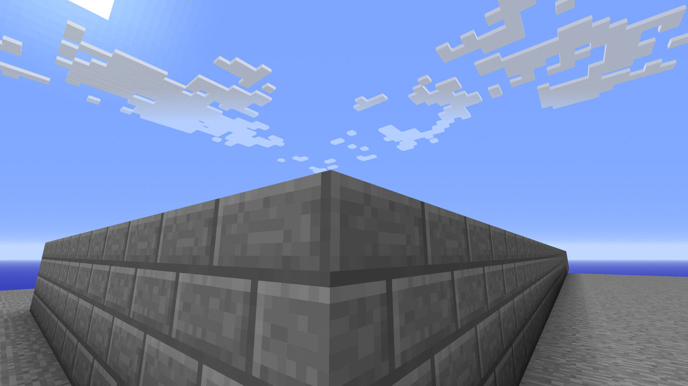

Platform 9¾
In this example we will explore Platform 9 and three quarters of King's cross station, London
At the beginning of an academic year of Hogwarts School of Witchcraft and Wizardry a large number of students choose to travel using the Hogwards Express. The train departs from platform 9 and three quarters, King's Cross Station, London. To reach this platform wizards and witches must run into an arch between the platforms 9 and 10 to be teleported the 9¾ platform. However due a certain number of mishaps/accidents over the years the Ministry of Magic has made new rules.
Only those heading into the wall at a predetermined speed of 4.3 m/s may be teleported. Too slow and the wizrd might be folling around and too fast might result in a minor injury or worse... Being spotted by a muggle which the ministry will then have obliviate. PS : The ministry has now enforced the metric system for all official work. Hence the speed is mentioned in meters per second.
using PiCraftFirst let us make the platforms (Muggle and Wizard world) Let's first make the muggle platform (9 & 10) and then place a platform perpendicular to that beneath
p = getTile()
setBlocks(p .+ (1, 0, 1), p .+ (12, 1, 40), Block(43, 5)) # Make a cobblestone platform
setBlocks(p .+ (5, 2, 1), p .+ (8, 12, 40), Block(45)) # For Brick archesNow we want to make arches in the brick column. For now semi-circular arches will do The equation for a general circle is x^2 + y^2 = r^2 where r is the radius So in general if we have a point: (a, b, c) and we wish to make a circle around it we might do something like this:- (Say in the x-y plane)
for x = -r:sign(r):r, y = -r:sign(r):r
if x^2 + y^2 <= r^2
setBlock(p .+ (x, y, 0), Block(1,0))
end
endHowever, since we have to make a semicircle we should only iterate y from 0 to r
r = 9
c1 = p .+ (5, 2, 11) # Center for 1st arch
for y = 0:r, z = -r:r
if y^2 + z^2 < r^2
setBlocks(c1 .+ (0, y, z), c1 .+ (3, y, z), Block(0))
end
end
c2 = p .+ (5, 2, 40 - 10)
for y = 0:r, z = -r:r
if y^2 + z^2 < r^2
setBlocks(c2 .+ (0, y, z), c2 .+ (3, y, z), Block(0))
end
end
Now we must now choose a reasonable condition to teleport One way can be: If player velocity in z direction and position is encosed within x: p[1] + 5:8 , y: p[2] + 2, z: 20.3 then teleport to desired location.
Now how do we calculate velocity ? Velocity is the rate at which an object's position changes w.r.t time. We can compute velocity as follows:
p1 = getPos()
sleep(0.05)
p2 = getPos()
vel = (p2 - p1)./0.05 # velocity = distance/timeThis gives us the velocity component of each direction. To get the true instantaneous velocity we have to take the norm of this. v = norm([velocity...]) # We effectively does v = sqrt(vel_x^2 + vel_y^2 + vel_z^2) However we only care about a wizard's z-component of velocity which will be vel[3]
function getVel()
p1 = getPos()
sleep(0.05)
vel = getPos() .- p1
return vel[3]/0.05
end
t = time()
while time() - t < 10
post("Velocity = "*string.(getVel())*" m/s")
end
Since platform 9¾ remains closed for most of the year we can add a time constraint to automatically close it.
t = time()
post("Platform 9¾ open!")
while time() - t < 30 # Platform closes in 30 seconds
v = getVel()
pos = getPos()
if v >= 4.20 && v <= 4.32
if pos[1] < p[1] + 9 && pos[1] > p[1] + 4 && pos[2] == p[2] + 2 && pos[3] > p[3] + 19.3
setPos(p)
end
end
end
post("Platform 9¾ closed!")Now, We wish to make an identical copy of this planform.
m = copyModel(p .+ (1, 0, 1), p .+ (12, 12, 40))
buildModel(rotate(m, dir = :l, dim = :y), p .+ (1, 15, 1))This built a copy of the platform which is perpendicular and above it. Place the new plaform anywhere you desire. Then set p to the coordinates of the arch.
This page was generated using Literate.jl.